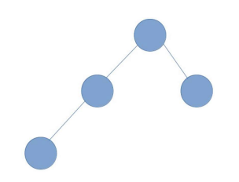
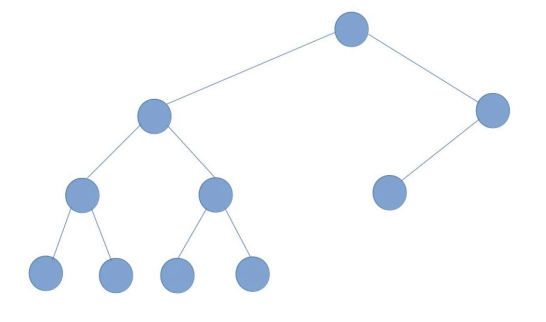
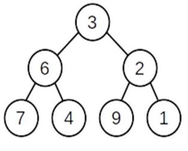
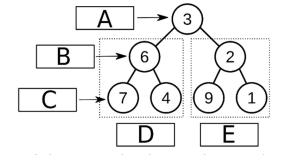
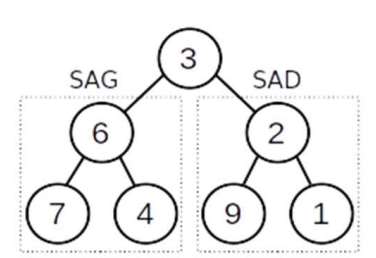
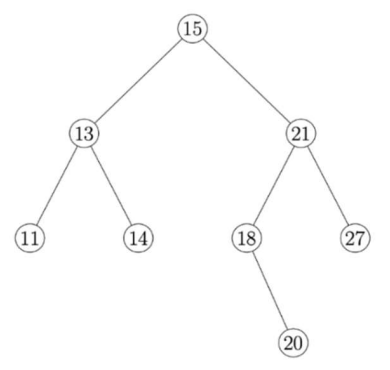
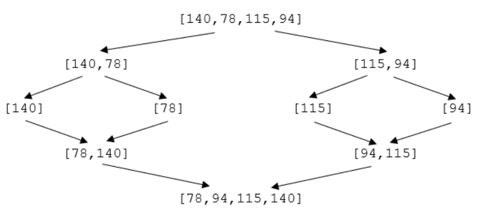
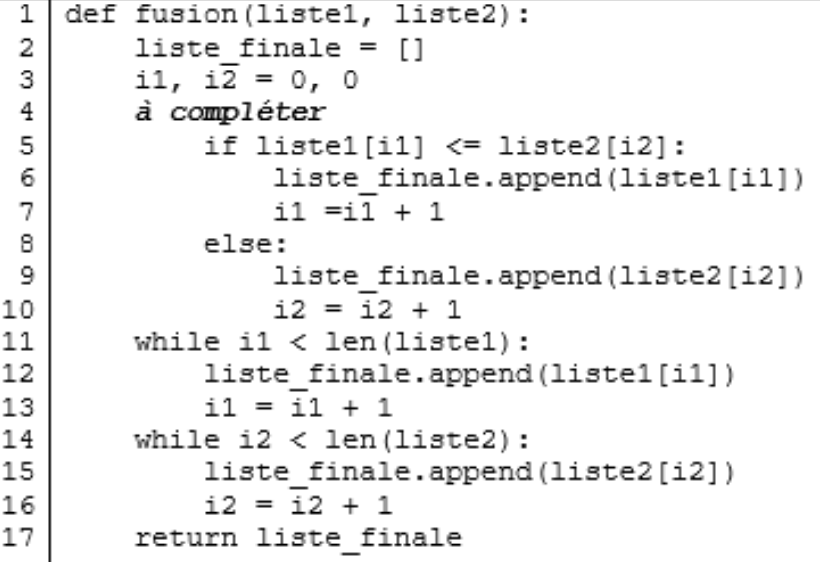
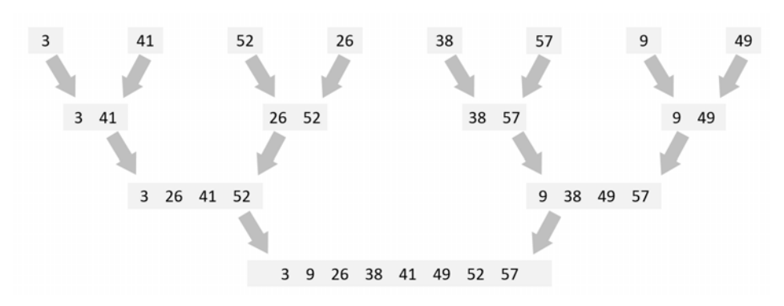

donnees structurees 2
Bac 2022 Polynesie: Exercice 5
Cet exercice traite du thème « algorithmique », et principalement des algorithmes sur les arbres binaires.
arbre binaire hauteur
On manipule ici les arbres binaires avec trois fonctions :
est_vide(A)qui renvoieTruesi l’arbre binaireAest vide,Falses’il ne l’est pas ;sous_arbre_gauche(A)qui renvoie le sous-arbre gauche de l’arbre binaireA;sous_arbre_droit(A)qui renvoie le sous-arbre droit de l’arbre binaireA.
L’arbre binaire renvoyé par les fonctions sous_arbre_gauche et sous_arbre_droit peut éventuellement être l’arbre vide.
On définit la hauteur d’un arbre binaire non vide de la façon suivante :
- si ses sous-arbres gauche et droit sont vides, sa hauteur est 0 ;
- si l’un des deux au moins est non vide, alors sa hauteur est égale à 1 + M, où M est la plus grande des hauteurs de ses sous-arbres (gauche et droit) non vides.
Question 1
A. Donner la hauteur de l’arbre ci-dessous.

304 × 232
B. Dessiner sur la copie un arbre binaire de hauteur 4.
La hauteur d’un arbre est calculée par l’algorithme récursif suivant :
Question 2
Recopier sur la copie les lignes 7 et 8 en complétant les points de suspension.
Question 3
On considère un arbre binaire R dont on note G le sous-arbre gauche et D le sous-arbre droit. On suppose que R est de hauteur 4 et G de hauteur 2.
A. Justifier le fait que D n’est pas l’arbre vide et déterminer sa hauteur.
B. Illustrer cette situation par un dessin.
Soit un arbre binaire non vide de hauteur h. On note n le nombre de nœuds de cet arbre. On admet que $h+1 \leqslant n \leqslant 2^{h+1}−1$.
Question 4
A. Vérifier ces inégalités sur l’arbre binaire de la question 1.A.
B. Expliquer comment construire un arbre binaire de hauteur h quelconque ayant h+1 nœuds.
C. Expliquer comment construire un arbre binaire de hauteur h quelconque ayant $2^{h+1}−1$ nœuds.
Indication : $2^{h+1}−1 = 1+2+4+...+2^h$
L’objectif de la fin de l’exercice est d’écrire le code d’une fonction fabrique(h, n) qui prend comme paramètres deux nombres entiers positifs h et n tels que $h+1 \leqslant n \leqslant 2^{h+1}−1$, et qui renvoie un arbre binaire de hauteur h à n nœuds.
Pour cela, on a besoin des deux fonctions suivantes:
arbre_vide(), qui renvoie un arbre vide ;arbre(gauche, droit)qui renvoie l’arbre de fils gauchegaucheet de fils droitdroit.
Question 5
Recopier sur la copie l’arbre binaire ci-dessous et numéroter ses nœuds de 1 en 1 en commençant à 1, en effectuant un parcours en profondeur préfixe.

546 × 322
fabrique ci-dessous a pour but de répondre au problème posé. Pour cela, la fonction annexe utilise la valeur de n, qu’elle peut modifier, et renvoie un arbre binaire de hauteur hauteur_max dont le nombre de nœuds est égal à la valeur de n au moment de son appel.
Question 6
Recopier sur la copie les lignes 7 et 11 en complétant les points de suspension.
Bac 2022 Metropole 1: Exercice 4
Cet exercice, composé de deux parties A et B, porte sur le parcours des arbres binaires, le principe “diviser pour régner” et la récursivité.
arbre parcours File récursivité
Cet exercice traite du calcul de la somme d’un arbre binaire. Cette somme consiste à additionner toutes les valeurs numériques contenues dans les nœuds de l’arbre.
L’arbre utilisé dans les parties A et B est le suivant :

314 × 252
Partie A : Parcours d’un arbre
Question 1
Donner la somme de l’arbre précédent. Justifier la réponse en explicitant le calcul qui a permis de l’obtenir.
Question 2
Indiquer la lettre correspondante aux noms ‘racine’, ‘feuille’, ‘nœud’, ‘SAG’ (Sous Arbre Gauche) et ‘SAD’ (Sous Arbre Droit). Chaque lettre A, B, C, D et E devra être utilisée une seule fois.

Arbre avec les lettres à associer - 578 × 310
Question 3
Parmi les quatre propositions A, B, C et D ci-dessous, donnant un parcours en largeur d’abord de l’arbre, une seule est correcte. Indiquer laquelle.
- Proposition A : 7 - 6 - 4 - 3 - 9 - 2 - 1
- Proposition B : 3 - 6 - 7 - 4 - 2 - 9 - 1
- Proposition C : 3 - 6 - 2 - 7 - 4 - 9 - 1
- Proposition D : 7 - 4 - 6 - 9 - 1 - 2 – 3
Question 4
Écrire en langage Python la fonction somme qui prend en paramètre une liste de nombres et qui renvoie la somme de ses éléments.
Exemple : somme([1, 2, 3, 4]) est égale à 10.
Question 5
La fonction parcourir(arbre) pourrait se traduire en langage naturel par :
Donner le type de parcours obtenu grâce à la fonction parcourir.
Partie B : Méthode ‘diviser pour régner’
diviser pour regnerQuestion 6
Parmi les quatre propositions A,B, C et D ci-dessous, indiquer la seule proposition correcte.
En informatique, le principe diviser pour régner signifie :
- Proposition A: diviser une fonction en deux fonctions plus petites
- Proposition B: utiliser plusieurs modules
- Proposition C: séparer les informations en fonction de leur types
- Proposition D: diviser un problème en deux problèmes plus petits et indépendants.
Question 7
L’arbre présenté dans le problème peut être décomposé en racine et sous arbres :

376 × 258
Question 8
Écrire en langage Python une fonction récursive calcul_somme(arbre).
Cette fonction calcule la somme de l’arbre passé en paramètre.
Les fonctions suivantes sont disponibles :
est_vide(arbre): renvoieTruesiarbreest vide et renvoieFalsesinon ;valeur_racine(arbre): renvoie la valeur numérique de la racine dearbre;arbre_gauche(arbre): renvoie le sous arbre gauche dearbre;arbre_droit(arbre): renvoie le sous arbre droit dearbre.
Bac 2022 Metropole 2: Exercice 1
Cet exercice porte sur les arbres binaires de recherche, la programmation orientée objet et la récursivité.
ABR POO récursivité
Dans cet exercice, la taille d’un arbre est le nombre de nœuds qu’il contient. Sa hauteur est le nombre de nœuds du plus long chemin qui joint le nœud racine à l’une des feuilles (nœuds sans sous-arbres). On convient que la hauteur d’un arbre ne contenant qu’un nœud vaut 1 et la hauteur de l’arbre vide vaut 0.
Question 1
On considère l’arbre binaire représenté ci-dessous:

Figure 1 - 390 × 370
A. Donner la taille de cet arbre.
B. Donner la hauteur de cet arbre.
C. Représenter sur la copie le sous-arbre droit du nœud de valeur 15.
D. Justifier que l’arbre de la figure 1 est un arbre binaire de recherche.
E. On insère la valeur 17 dans l’arbre de la figure 1 de telle sorte que 17 soit une nouvelle feuille de l’arbre et que le nouvel arbre obtenu soit encore un arbre binaire de recherche. Représenter sur la copie ce nouvel arbre.
Question 2
On considère la classe Noeud définie de la façon suivante en Python :
A. Parmi les trois instructions (A), (B) et (C) suivantes, écrire sur la copie la lettre correspondant à celle qui construit et stocke dans la variable abr l’arbre représenté ci-contre.
(A) abr=Noeud(Noeud(Noeud(None,13,None),15,None),21,None)
(B) abr=Noeud(None,13,Noeud(Noeud(None,15,None),21,None))
(C) abr=Noeud(Noeud(None,13,None),15,Noeud(None,21,None))
B. Recopier et compléter la ligne 7 du code de la fonction ins ci-dessous qui prend en paramètres une valeur v et un arbre binaire de recherche abr et qui renvoie l’arbre obtenu suite à l’insertion de la valeur v dans l’arbre abr. Les lignes 8 et 9 permettent de ne pas insérer la valeur v si celle-ci est déjà présente dans abr.
Question 3
La fonction nb_sup prend en paramètres une valeur v et un arbre binaire de
recherche abr et renvoie le nombre de valeurs supérieures ou égales à la valeur v dans l’arbre abr.
Le code de cette fonction nb_sup est donné ci-dessous :
A. On exécute l’instruction nb_sup(16, abr) dans laquelle abr est l’arbre
initial de la figure 1. Déterminer le nombre d’appels à la fonction nb_sup.
B. L’arbre passé en paramètre étant un arbre binaire de recherche, on peut
améliorer la fonction nb_sup précédente afin de réduire ce nombre d’appels.
Écrire sur la copie le code modifié de cette fonction.
Bac 2023 Centres etrangers J4
(extrait du sujet) tri fusion
Le grossiste enregistre dans la liste sommes les montants des commandes,
avant réduction, que des clients ont passées dans son magasin.
Par exemple : sommes = [140, 78, 115, 94, 46, 108, 55, 53]
Il va utiliser la méthode de tri-fusion pour trier la liste sommes dans l’ordre croissant. L’algorithme du tri-fusion est naturellement décrit de façon récursive (dans toute la suite, on supposera pour simplifier que le nombre d’éléments de la liste est une puissance de 2) :
- si la liste n’a qu’un ou aucun élément, elle est déjà triée,
- sinon:
- on sépare la liste initiale en deux listes de même taille,
- on applique récursivement l’algorithme sur ces deux listes,
- on fusionne les deux listes triées obtenues en une seule liste triée.
On trouve ci-dessous un exemple de déroulement de cet algorithme pour la liste
[140,78,115,94] de 4 éléments :

division et tri fusion
a. Appliquer sur votre copie, de la même façon que dans l’exemple précédent,
le déroulement de l’algorithme pour la liste suivante :
[46, 108, 55, 53]
On rappelle que l’appel L.append(x) ajoute l’élément x à la fin de la liste L et que
len(L) renvoie la taille de la liste L.
b. La fonction fusion ci-dessous renvoie une liste de valeurs triées à partir des
deux listes liste1 et liste2 préalablement triées. Ecrire sur la copie l’instruction à
placer à la ligne 4 du code de la fonction fusion :

script de la fonction fusion
Choisir parmi les propositions:
Justifiez votre choix.
c. Recopier et compléter sur la copie la fonction récursive tri_fusion suivante, qui prend en paramètre une liste non triée et la renvoie sous la
forme d’une nouvelle liste triée.
On utilisera la fonction fusion de la question précédente.
Exemple : tri_fusion([140,115,78,94]) doit renvoyer
[78,94,115,140]
Aide Python : si L est une liste, l’instruction L[i:j] renvoie la liste
constituée des éléments de L indexés de i à j-1.
Par exemple, si L=[5,4,8,7,3], L[2:4] vaut [8,7].
Bac 2021 Polynesie Exercice 1
Algorithmes de tri insertion tri fusion complexité
Cet exercice traite principalement du thème « algorithmique, langages et programmation ». Le but est de comparer le tri par insertion (l’un des algorithmes étudiés en 1ère NSI pour trier un tableau) avec le tri fusion (un algorithme qui applique le principe de « diviser pour régner »).
Partie A : Manipulation d’une liste en Python
- Donner les affichages obtenus après l’exécution du code Python suivant.
- Écrire un code Python permettant d’afficher les éléments d’indice 2 à 4 de la liste
notes
Partie B : Tri par insertion
Le tri par insertion est un algorithme efficace qui s’inspire de la façon dont on peut trier une poignée de cartes. On commence avec une seule carte dans la main gauche (les autres cartes sont en tas sur la table) puis on pioche la carte suivante et on l’insère au bon endroit dans la main gauche.
- Voici une implémentation en Python de cet algorithme. Recopier et compléter les lignes 6 et 7 surlignées (uniquement celles-ci).
On a écrit dans la console les instructions suivantes :
On a obtenu l’affichage suivant : [3, 7, 8, 9, 12, 14, 17, 18]
On s’interroge sur les étapes lors de l’exécution de tri_insertion(notes)
- Donner le contenu de la liste
notesaprès le premier passage dans la boucle for. - Donner le contenu de la liste
notesaprès le troisième passage dans la boucle for. - Quelle est la complexité algorithmique de cet algorithme dans le meilleur des cas? (celui où la liste en paramètre est déjà triée). Justifiez.
Partie C : Tri fusion
L’algorithme de tri fusion suit le principe de « diviser pour régner ».
- Si le tableau à trier n’a qu’un élément, il est déjà trié.
- Sinon, séparer le tableau en deux parties à peu près égales.
- Trier les deux parties avec l’algorithme de tri fusion.
- Fusionner les deux tableaux triés en un seul tableau.
source wikipedia
- Cet algorithme est-il itératif ou récursif ? Justifier en une phrase.
- Expliquer en quelques lignes comment faire pour rassembler dans une main deux tas déjà triés de cartes, la carte en haut d’un tas étant la plus petite de ce même tas ; la deuxième carte d’un tas n’étant visible qu’après avoir retiré la première carte de ce tas.
À la fin du procédé, les cartes en main doivent être triées par ordre croissant.
Une fonction fusionner a été implémentée en Python en s’inspirant du procédé de la
question précédente. Elle prend quatre arguments : la liste qui est en train d’être triée, l’indice où commence la sous-liste de gauche à fusionner, l’indice où termine cette sous-liste, et l’indice où se termine la sous-liste de droite.
- Voici une implémentation de l’algorithme de tri fusion. Recopier et compléter les lignes 8, 9 et 10 surlignées (uniquement celles-ci).
Remarque : la fonction floor renvoie la partie entière du nombre passé en paramètre.
- Expliquer le rôle de la première ligne du code de la question précédente.
Partie D : Comparaison du tri par insertion et du tri fusion
Voici une illustration des étapes d’un tri effectué sur la liste [3, 41, 52, 26, 38, 57, 9, 49]

Figure 1 - 500 × 400
-
Quel algorithme a été utilisé : le tri par insertion ou le tri fusion ? Justifier.
-
Identifier le tri qui a une complexité, dans le pire des cas, en $O(n^2)$ et identifier le tri qui a une complexité, dans le pire des cas, en $O(n log_2 n)$.
Remarque : n représente la longueur de la liste à trier.
Justifier brièvement ces deux complexités.